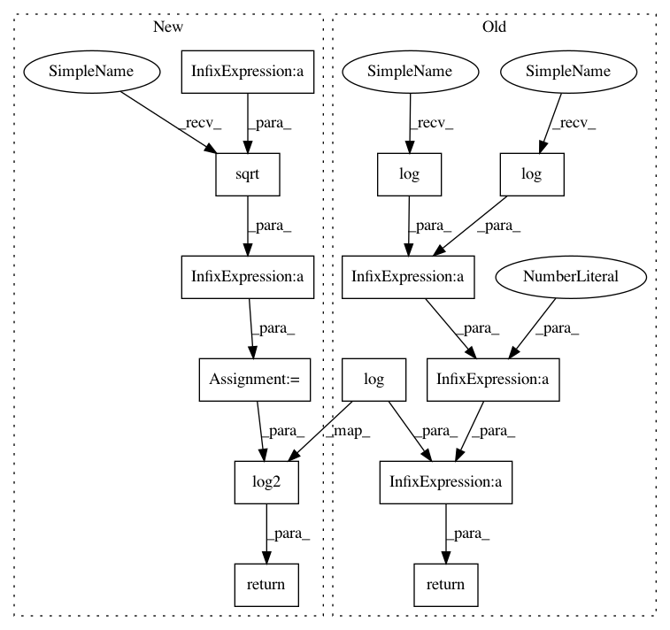

3452cdbe9f0a964f22c5c4ea6aeb8c026af040d3,pynndescent/sparse.py,,sparse_alternative_hellinger,#,541
Before Change
elif result <= 0:
return FLOAT32_MAX
else:
return 0.5 * (np.log(l1_norm_x) + np.log(l1_norm_y)) - np.log(result)
@numba.vectorize(fastmath=True, cache=True)
def sparse_correct_alternative_hellinger(d):
After Change
elif result <= 0:
return FLOAT32_MAX
else:
result = np.sqrt(l1_norm_x * l1_norm_y) / result
return np.log2(result)
@numba.vectorize(fastmath=True, cache=True)
def sparse_correct_alternative_hellinger(d):
In pattern: SUPERPATTERN
Frequency: 3
Non-data size: 13
Instances
Project Name: lmcinnes/pynndescent
Commit Name: 3452cdbe9f0a964f22c5c4ea6aeb8c026af040d3
Time: 2020-09-07
Author: leland.mcinnes@gmail.com
File Name: pynndescent/sparse.py
Class Name:
Method Name: sparse_alternative_hellinger
Project Name: lmcinnes/pynndescent
Commit Name: d8d58997b4913f206bf8835cbbfd5ab46a19d189
Time: 2020-08-23
Author: leland.mcinnes@gmail.com
File Name: pynndescent/distances.py
Class Name:
Method Name: alternative_cosine
Project Name: lmcinnes/pynndescent
Commit Name: 3452cdbe9f0a964f22c5c4ea6aeb8c026af040d3
Time: 2020-09-07
Author: leland.mcinnes@gmail.com
File Name: pynndescent/sparse.py
Class Name:
Method Name: sparse_alternative_hellinger
Project Name: lmcinnes/pynndescent
Commit Name: 034262a969817b3d8b8778cc9c7703a4911aaef8
Time: 2020-09-03
Author: leland.mcinnes@gmail.com
File Name: pynndescent/distances.py
Class Name:
Method Name: alternative_hellinger